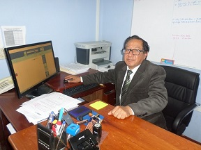
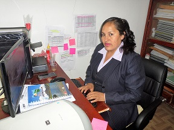
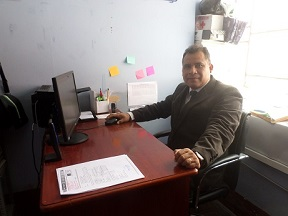
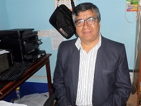
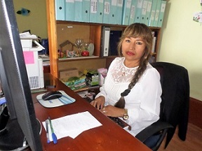

Inicio >> Directorio
Dirección |
|
|  | Javier H. CALDERÓN MENDOZA Director de UGEL Marañon jcalderon@regionhuanuco.gob.pe |
Órgano de Control Institucional |
|
|  | Abog. Jenny Lili SANTISTEBAN DOMINGUEZ Jefa del Órgano de Control Institucional jsantisteban@regionhuanuco.gob.pe |
Asesoría Jurídica |
|
| Dra. Elena Dora GUEVARA CASTRO Asesora Jurídica eguevara@regionhuanuco.gob.pe |
Administración |
|
|  | José Félix CARRIÓN FERNANDEZ Jefe del Área Administrativa jcarrion@regionhuanuco.gob.pe |
Área de Gestión Institucional |
|
|  | Abog. Epifanio Donato TARAZONA CARRASCO Jefe del Área de Gestión Institucional etarazona@regionhuanuco.gob.pe |
Área de Gestión Pedagógica |
|
|  | Dra. Gretel Beldad CARDENAS QUISPE Jefa del Área de Gestión Pedagógica gcardenas@regionhuanuco.gob.pe |